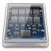

Secure-Erase
Dieser Artikel wurde für die folgenden Ubuntu-Versionen getestet:
Dieser Artikel ist mit keiner aktuell unterstützten Ubuntu-Version getestet! Bitte diesen Artikel testen und das getestet-Tag entsprechend anpassen.
Zum Verständnis dieses Artikels sind folgende Seiten hilfreich:
Hinweis:
Dieser Artikel ist Teil der Artikelserie SSD, welche das Thema Solid State Drives behandelt. Dieser Artikel geht in allen Beschreibungen davon aus, dass die SSD als /dev/sda im System eingebunden ist. Die Befehle müssen bei davon abweichenden Systemen daher gegebenenfalls angepasst werden.
 Das Zurücksetzen in den Ursprungszustand kann sinnvoll sein, wenn man das Gefühl hat, dass die SSD mit der Zeit langsamer wird. Vor einer Partitionierung und einem Formatieren sollte man die SSD ebenfalls einem „Secure Erase“ unterziehen. Damit werden alle Blöcke der SSD vom Controller gelöscht, was die Performance der SSD steigert.
Möchte man eine SSD in den Ursprungszustand („Factory Default“) zurückversetzen, kann man grundsätzlich zwischen zwei Verfahren wählen:
Löschen im Terminal mit hdparm: Aus einer Konsole heraus über hdparm. Kann wegen des Freeze-Status Problems schwierig sein.
Löschen mit „PartedMagic Live-CD“: Einfacher und nicht so aufwändig wie hdparm. Man benötigt eine „PartedMagic Live-CD“ und deren Bordwerkzeuge.
Hinweis:
Einen „Secure Erase“ muss man bei aktuellen Ubuntuversionen nicht mehr explizit durchführen, möchte man neu installieren oder partitionieren (inklusive Formatierung). Bevor die eingesetzten Formatierungsprogramme wie e2fsprogs die Dateisystemstrukturen einrichten, melden diese der SSD den gesamten formatierten Bereich per Discard als ungenutzt: „Mke2fs will use BLKDISCARD to pre-discard all blocks on an SSD…“ (siehe e2fsprogs 1.41.10  )
)
Löschen mit Secure Erase¶
Um das Löschen durchführen zu können, darf die SSD nicht eingebunden (siehe mount) sein, weshalb man von einer Live-CD oder einem Live-USB booten muss.
Achtung!
Durch Secure-Erase und Partitionierung gehen alle Daten des betreffenden Laufwerks verloren. Es sollten vor allen weiteren Aktionen aktuelle Backups angelegt werden.
Hinweis:
Die SSD sollte direkt am SATA-Controller des Rechners angeschlossen sein. Suboptimal sind USB- und Firefire-Anschlüsse sowie Anschlüsse am Hardware-RAID-Controller. Beim Einsatz eines SCSI/ATA Translation in Verbindung mit dem Befehl hdparm wird hdparm mindestens in Version 9.31 vorausgesetzt (erst ab Ubuntu 11.04).
Im ersten Schritt muss man in einem Terminal [1] und mit Root-Rechten [2] nachschauen, ob die „Laufwerk-Security“ nicht „frozen“ ist. Dies geschieht mit dem folgenden Befehl:
sudo hdparm -I /dev/sda
Die Ausgabe ist etwas länger. Ziemlich weit unten unter der Überschrift "Security" könnte so etwas wie folgt stehen:
Security: supported not enabled not locked not frozen not expired: security count supported: enhanced erase 400min for SECURITY ERASE UNIT. 400min for ENHANCED SECURITY ERASE UNIT.
Wichtig sind hier die gelb-markierten Bereiche. Stehen diese auf frozen statt auf not frozen oder auf not supported: enhanced erase statt auf supported: enhanced erase, so kann man nicht fortfahren. Stattdessen sollte man sich beim Hersteller der SSD erkundigen, wie man diese Option freischalten kann (siehe auch Exkurs: Freeze-Status der SSD aufheben). Den anderen gelben Bereich not enabled schaltet man mit dem nächsten Schritt auf enabled.
Dazu muss man ein Passwort setzen. Die Security-Funktion not enabled ist danach aktiviert (enabled). Das Passwort selbst ist an keinerlei Vorgaben gebunden und wird auch nur temporär benutzt; nach dem „Secure Erase“ wird das Passwort gelöscht und der Status zurück auf not enabled gesetzt. Das Passwort im folgenden Befehl lautet GEHEIM.
sudo hdparm --user-master u --security-set-pass GEHEIM /dev/sda
Die Ausgabe nach dem folgenden Befehl sieht in etwas wie folgt aus:
security_password="GEHEIM" /dev/sda: Issuing SECURITY_SET_PASS command, password="GEHEIM", user=user, mode=high
Danach sollte man auf jeden Fall nachschauen, ob das Setzen des Passwortes und des Status geklappt hat. Dazu gibt man erneut den ersten Befehl ein:
sudo hdparm -I /dev/sda
Und sollte daraufhin die folgende Ausgabe erhalten:
Security:
Master password revision code = 65534
supported
enabled
not locked
not frozen
not expired: security count
supported: enhanced erase
Security level high
2min for SECURITY ERASE UNIT. 2min for ENHANCED SECURITY ERASE UNIT.
Hinweis:
Man sollte nach diesem Kommando den Rechner möglichst nicht neu starten, da die SSD nach einem Neustart erneut locked ist und dies so lange bleibt, bis sie mit dem korrekten Passwort entsperrt wird. Die Security-Funktion wird nach dem „Secure Erase“ automatisch und vollständig deaktiviert (von enabled nach not enabled).
Ist nun alles korrekt, kann man mit dem „Secure Erase“ beginnen. Dazu nutzt man den folgenden Befehl:
sudo time hdparm --user-master u --security-erase GEHEIM /dev/sda
Die Ausgabe könnte wie folgt aussehen:
security_password="GEHEIM" /dev/sda: Issuing SECURITY_ERASE command, password="GEHEIM", user=user 0.000u 0.000s 1:53.32 0.0% 0+0k 0+0io 0pf+0w
Das Löschen hat in diesem Fall eine Minute und 53 Sekunden gedauert. Der Test wurde mit einer 160 Gigabyte SSD durchgeführt, was bedeutet, dass er bei einer SSD mit mehr Kapazität deutlich länger dauern kann.
Nach erfolgreichem Löschen sollte die Security-Funktion der SSD automatisch wieder deaktiviert werden (von enabled nach not enabled). Dies überprüft man erneut mit dem ersten Befehl:
sudo hdparm -I /dev/sda
Die Ausgabe sollte wie folgt aussehen (not enabled):
Security: supported not enabled not locked not frozen not expired: security count supported: enhanced erase 400min for SECURITY ERASE UNIT. 400min for ENHANCED SECURITY ERASE UNIT.
Sollten Fehlermeldungen auftauchen, kann man im ATA-Wiki nachschauen.
Exkurs: Freeze-Status der SSD aufheben¶
Viele BIOS blocken aus Sicherheitsgründen das „ATA Secure Erase“-Kommando. Dieses BIOS-Kommando blockt das Laufwerk („freezed“) bevor es Ubuntu bootet, so dass man nicht fälschlicherweise oder aus Versehen das Secure-Erase-Verfahren durchführen kann.
Achtung!
In seltenen Fällen können die nachfolgenden Verfahren zum Absturz des Kernels führen, daher wird empfohlen die folgenden Schritte von einer LiveCD aus zu machen. Im Falle eines Absturzes sollte man das ganze System vollständig rebooten lassen und noch einmal von vorne probieren.
Desktops¶
Eine mögliche Lösung für SATA-Laufwerke besteht darin, die SSD kurz vom laufenden System zu trennen. Nachdem man alle Dateisysteme, LVMs und Crypt-Container ausgehängt hat, geht man folgendermaßen vor:
echo 1 | sudo tee /sys/block/sdX/device/delete
Damit wurde die SSD sicher vom System entfernt. Anschließend zieht man im laufenden Betrieb das Datenkabel der betroffenen SSD und steckt es dann wieder ein (siehe Hot Plugging). Bei manchen SSDs, wie zum Beispiel der Samsung SSD 830, reicht es nicht nur das SATA-Datenkabel abzustecken. In diesem Fall muss auch das Stromkabel getrennt werden. Dazu geht man wie oben gennant vor, nur das man nach dem entfernen des Datenkabel auch noch das Stromkabel abzieht. Danach schließt man die SSD in umgekehrter Reihenfolge wieder an, also zuerst das Stromkabel und dann das Datenkabel. Spätestens dann sollte die SSD nicht mehr im Freeze-Zustand sein. Im freien Handel soll es angeblich billige SSDs geben, die vom Hersteller in den Freeze-Zustand gesetzt werden. In diesem Fall muss man sich an den Hersteller wenden.
Notebooks¶
Wie auch bei den Desktop-Systemen, sollte man vor dem Herausziehen der SSD diese mit folgendem Befehl sicher vom System abmelden:
echo 1 | sudo tee /sys/block/sdX/device/delete
Da die SSD bei Laptops über keinerlei erreichbaren Kabel verfügt, hilft es, die SSD für zehn Sekunden aus dem Festplattenschacht zu ziehen, so dass sie keine Verbindung mehr zum Computer hat. Danach steckt man sie wieder ein und kann in den meisten Fällen mit nicht gelocktem Laufwerk fortfahren. Alternativ hilft es bei vielen Modellen, das Notebook erst einmal in den Standby (nicht Hibernate/Ruhezustand) zu versetzen und wieder aufzuwecken, danach ist die SSD nicht mehr "frozen". Dieses Verfahren wurde erfolgreich mit Laptops von HP und Lenovo getestet (siehe Linux ATA wiki ).
Löschen mit PartedMagic Erase Disk¶
Um das Verfahren mit Hilfe der Live-CD durchführen zu können, muss man von der dem Zielrechner entsprechenden Version von Parted Magic booten.
Disk Erasing 101¶
Im Startmenü "System Tools → Erase Disk wählen, um Disk Erasing 101 zu starten.
Im ersten Dialog die Option "Internal: Secure Erase command writes..." auswählen und mit Continue bestätigen.
Der zweite erscheinende Dialog zeigt die unterstützten Laufwerke an, hier muss das gewünschte Laufwerk selektiert werden. Mit OK gelangt man zu weiteren Dialogen.
Sofern sich die SSD im "Frozen"-Status befindet, erscheint ein Dialog, der vorschlägt den Rechner schlafen zu legen, da anderenfalls Security-Erase nicht durchgeführt werden kann. Wenn nicht kann gleich mit Schritt 6 fortgefahren werden.
Mit dem Button Sleep wird der Rechner in den Schlafmodus versetzt, er kann dann gleich wieder aufgeweckt werden. Die Schritte 1-3 müssen nochmals durchlaufen werden.
Beim nun erscheinenden Dialog wird ein Passwort abgefragt, hier kann man den Standardeintrag "NULL" stehen lassen. Nach OK folgt eine Sicherheitswarnung.
Es taucht nun, sofern von der SSD unterstützt, eine Frage nach "Enhanced Secure Erase" auf, wo man sich ebenfalls entscheiden kann. Nach Bestätigung startet der Vorgang.
Nach erfolgter Operation erscheint ein Infodialog und die SSD ist wieder bereit. Jetzt kann die SSD direkt mit GParted partitioniert werden. Da auch die Partitionstabelle entfernt wurde, muss diese als erstes wieder neu angelegt werden.

- Erstellt mit Inyoka
-
 2004 – 2017 ubuntuusers.de • Einige Rechte vorbehalten
2004 – 2017 ubuntuusers.de • Einige Rechte vorbehalten
Lizenz • Kontakt • Datenschutz • Impressum • Serverstatus -
Serverhousing gespendet von